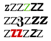

Appendix F. Canonical Story Files
Story files are mechanically best identified by their release number and serial code, which are written into the header information at the bottom of Z-machine memory. The release number can be anything between 0 and 65535 but is usually between 1 and 100. The serial code can consist of any six textual characters but is usually the date of compilation, arranged YYMMDD: thus 970619 refers to June 19th, 1997. The notation
Release number.Serial code
identifies particular story files: for example the first production copy of 'Enchanter' is 10.830810.
Paul David Doherty's investigations into Infocom's released games have resulted in the following list of all known story files compiled by Zilch, the Infocom compiler:
| Zork I | 5. (no serial code) |
|---|
| Zork I | 15.UG3AU5 |
|---|---|
| Zork II | 7.UG3AU5 |
| Ballyhoo | 97.851218 |
|---|---|
| Cutthroats | 23.840809 |
| Deadline | 18.820311, 19.820427, 21.820512, 26.821108, 27.831005 |
| Enchanter | 10.830810, 15.831107, 16.831118, 24.851118, 29.860820 |
| Four-In-One Sampler I | 26.840731, 53.850407, 55.850823 |
| Four-In-One Sampler II | 97.870601 |
| The Hitch Hiker's Guide To The Galaxy | 47.840914, 56.841221, 58.851002, 59.851108 |
| Hollywood Hijinx | 37.861215 |
| Infidel | 22.830916 |
| Leather Goddesses of Phobos | 118.860325? (beta), 50.860711?, 59.860730, 59.861114 |
| Lurking Horror | 203.870506, 219.870912 (s), 221.870918 (s) |
| Mini-Zork I | 34.871124 |
| Moonmist | 4.860918, 9.861022 |
| Planetfall | 20.830708, 29.840118, 37.851003 |
| Plundered Hearts | 26.870730 |
| Seastalker | 86.840320 (beta), 15.840501, 15.840522, 16.850515, 16.850603 |
| Sorcerer | 67.000000? (beta), 4.840131, 6.840508, 13.851021, 15.851108, 18.860904 |
| Spellbreaker | 63.850916, 87.860904 |
| Starcross | 15.820901, 17.821021 |
| Stationfall | 107.870430 |
| Suspect | 14.841005 |
| Suspended | 5.830222, 7.830419, 8.830521, 8.840521 |
| Wishbringer | 68.850501, 69.850920 |
| Witness | 13.830524, 18.830910, 20.831119, 21.831208, 22.840924 |
| Zork I | 23.820428, 25.820515, 26.820803, 28.821013, 30.830330, 75.830929, 76.840509, 88.840726 |
| Zork II | 17.820427, 18.820512, 18.820517, 19.820721, 22.830331, 23.830411, 48.840904, ?.841220? |
| Zork III | 10.820818, 15.830331, 16.830410, 15.840518, 17.840727 |
Note that the two samplers and the mini-Zork are in the public domain and may be downloaded from Internet archive sites. One form of 'Zork I' can be downloaded freely from Activision's Web pages promoting the Zork brand name.
The two problem children here are 'Seastalker', a submarine game which produces a sonar display across the top of the screen (and thus needs more sophisticated screen control features than the other Version 3 games) and 'The Lurking Horror', which uses sound effects (hence the "(s)" notation).
| A Mind Forever Voyaging | 77.850814, 79.851122 |
|---|---|
| Bureaucracy | 86.870212, 116.870602 |
| Nord and Bert Couldn't Make Head Nor Tail Of It | 19.870722 |
| Trinity | 11.860509, 12.860926 |
| Beyond Zork | 47.870915, 49.870917, 51.870923, 57.871221 |
| Border Zone | 9.871008 |
| The Hitch Hiker's Guide To The Galaxy SG | 31.871119 |
| Leather Goddesses of Phobos SG | 4.880405 |
| Planetfall SG | 10.880531 |
| Sherlock | 21.871214, 26.880127 (s) |
| Wishbringer SG | 23.880706 |
| Zork I SG | 52.871125 |
| Zork I German | 3.880113 (beta) |
The "SG" games were "solid gold" revisions of existing Version 3 games, adding on-line hints and an UNDO command. Regrettably these are not the versions distributed by Activision on their recent re-releases of the Infocom back catalogue.
One form of 'Sherlock' uses sound effects. 'Border Zone' introduces timed input. 'Beyond Zork' features a character-graphics font. But the most interesting file is the German translation of 'Zork I', which was never commercially released, introducing an alphabet table to the format.
| Game | Mac | Amiga | Apple II | IBM |
|---|---|---|---|---|
| Arthur | 54.890606 | same as Mac | 63.890622? | 74.890714 |
| Journey | 26.890316 | 30.890322 | 77.890616? | 83.890706 |
| Shogun | 292.890314 | 295.890321 | 311.890510? | 322.890706 |
| Zork Zero | 296.881019 | 366.890323 | 383.890602? | 393.890714 |
The rule that story files should be independent of their target computers was dropped for Version 6 games and this leads to copious footnotes and exceptions in sections 8.8 and 16 of the standard. Story files for a particular game are substantially similar to each other but use fonts, pictures and so on slightly differently.
Note that a new Infocom game, Zork: The Undiscovered Underground was published by Activision in 1997. 16.970828 is the only public version I know of: however, note that this file was compiled by Inform and not by Zilch. It is therefore not useful as a witness to Z-machine rules.